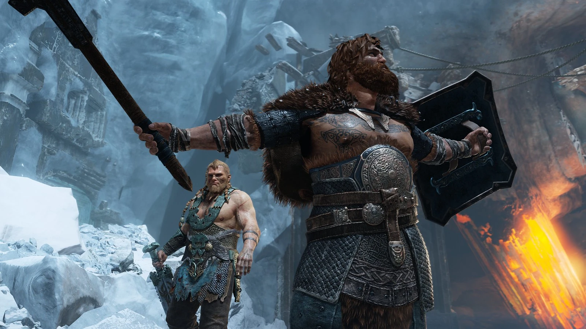
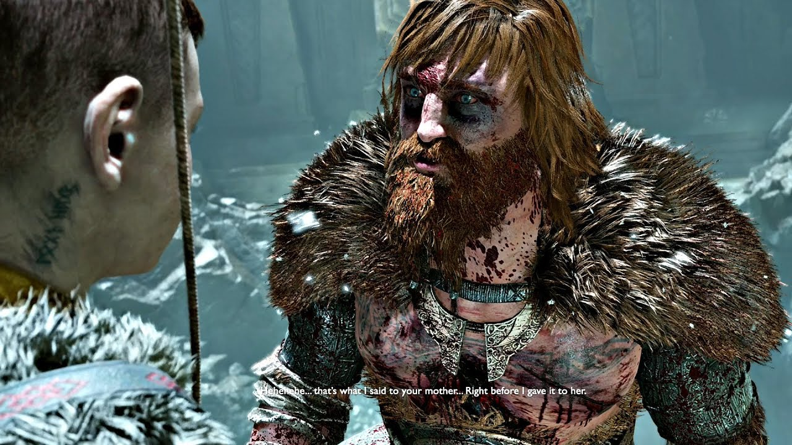
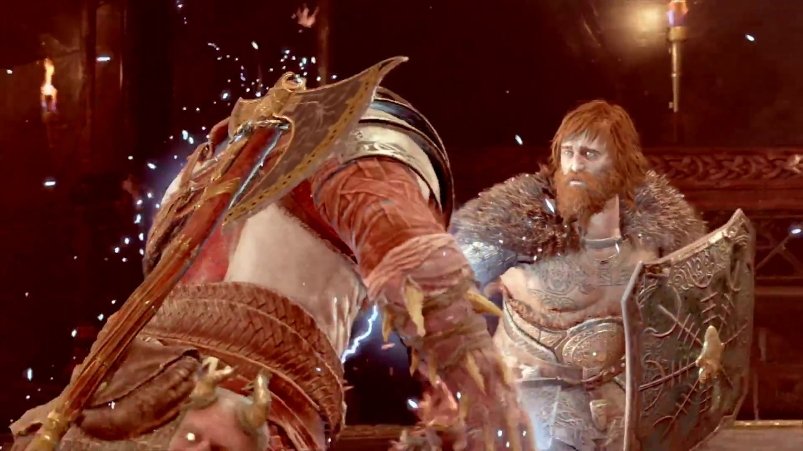

Modi
 Depois que seu tio é derrotado em batalha por um homem suspeito de ser o Guardião, Magni e Modi são convocados por Baldur para ajudá-lo em sua busca por seu alvo. Os três viajam para Midgard, onde buscam conselhos do agora aprisionado Mimir.
Mimir fica chocado e se diverte com o fato de "os filhos de Thor" o terem agraciado com sua presença e zombeteiramente pergunta se os dois ainda estão tropeçando em si mesmos "tentando impressionar o papai". Os três tentam obter respostas de Mimir sobre o paradeiro de Kratos e seu filho Atreus.
com Baldur até se oferecendo para falar com o próprio Odin em nome de Mimir e tentar libertar Mimir, mas Mimir, sabendo muito bem que Odin nunca o libertará, se recusa a ajudar e simplesmente ordena que Baldur saia, bem como leve os "dois idiotas inúteis" com dele. Frustrado,
Baldur vai embora, mas não antes de Modi ameaçar voltar mais tarde e roubar o outro olho de Mimir. A conversão dos dois irmãos posteriormente irrita Baldur a ponto de ele mandar calar a boca e chamá-los de "idiotas".
Pouco depois, Magni e Modi se separaram de seu tio para caçar Kratos e Atreus.
Tendo testemunhado o martelo do Frost Giant Thamur cair repentinamente sem motivo aparente e destruir toda a planície congelada, os dois decidem investigar a área; assumindo corretamente que seus inimigos também estão lá. Continuando a procurar na área,
Modi traz à tona sua desconfiança por seu tio ao mencionar que Baldur não vê direito há anos, mas Magni afirma que, como Thor confia neles, eles devem confiar nele também. Modi observa sarcasticamente que eles não podem decepcionar o pai, ao que Magni responde com um tom de voz irritado.
Assim que Kratos e Atreus chegam com a cabeça agora decepada de Mimir para reivindicar um pedaço do cinzel de Thamur, eles são vistos por Magni e Modi e rapidamente emboscados. Magni ordena que pai e filho se rendam, mas Kratos se recusa a obedecer, iniciando assim uma briga entre eles e os filhos de Thor.
Modi se apresenta pulando de cima e bloqueando a fuga de Atreus. Sadisticamente divertido com a mera visão de Atreus, Modi aproveita a luta para zombar impiedosamente de Atreus constantemente durante a batalha; tendo prazer imoral em insultar o menino e tentar irritá-lo. A luta, porém,
dá uma guinada drástica quando Kratos consegue matar Magni cravando seu machado no rosto de Magni. Visivelmente perturbado pela morte do meio-irmão mais velho ter ocorrido bem na sua frente (assim como dado pelo fato de os dois se acreditarem incapazes de morrer),
um Modi horrorizado se afasta de Kratos com medo enquanto luta para falar com terror e raiva. Depois de ser atingido por várias flechas por Atreus, Modi vira as costas e foge; desaparecendo na encosta do penhasco e no fole do cânion.

Agora que Magni se foi,
Modi percebe que receberá Mjölnir simplesmente por padrão e será para sempre considerado uma piada pelos Aesir. Recusando-se a deixar esse destino acontecer, Modi tenta vingar seu irmão no Templo de Tyr. Emboscando Kratos e Atreus enquanto eles estavam preocupados em tentar entrar nas câmaras secretas de Tyr,
Modi invoca uma tempestade elétrica e desativa os dois. Com os dois caídos, Modi entra e começa a eletrocutar continuamente Kratos com sua maça enquanto Atreus observa impotente. Modi proclama furiosamente que Kratos arruinou tudo e provoca perturbadoramente Atreus, afirmando que ele será seu "novo irmão mais novo". Enfurecido,
Atreus tenta ativar sua raiva interior para tentar salvar seu pai apenas para cair inesperadamente em coma, dando a Kratos a tão necessária oportunidade (e motivação) para dominar e desarmar Modi, forçando o semideus covarde a fugir mais uma vez.

Depois disso, ele foge para Asgard, onde seu pai, Thor,
acreditou que ele deixou Magni para morrer e o espancou severamente por sua covardia.